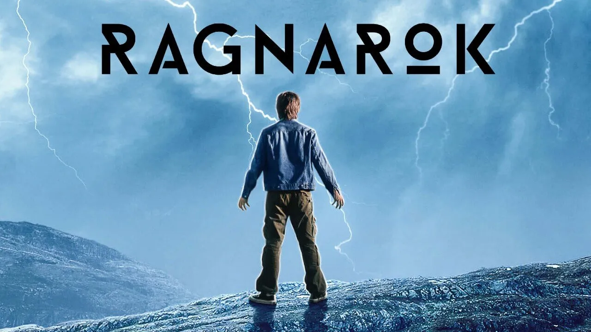

INFORMACIÓ GENEREAL
Ragnarök es una serie de Netflix, de suspens y ciencia ficción creada per Adam Price. Aquest serie es va fer en Noruega en el poble fictici d'Edda que en realitat és diu Odda, aquesta fa réferencia a alguns topcis el canvi climatic, la contaminació industrial.
Ragnarök está ambientat en la mitologia nordica en el qual un adolescent amb el poders de Thor.
ha de lliutar contra la familia de gegants que estan destruint el planeta amb les seves empreses.Es va estrenar al Netflix el 31 de gener de 2020. La primera temporada va rebre grans critices positives, la majoria els comparaben amb la serie ceprusculo.
La segona temporada es va estrenar el 27 de maig del 2021.

ESTRENA LA SEGONA TEMPORADA "RAGNAROK" EN NETFILX
Al final de la primera temporada de Ragnarok, Magne es va enfrontar a Vidar, el líder de la família Jutul, i encara que semblava que el Gegant guanyaria, Magne va aconseguir invocar el poder de Thor i va aconseguir que un llamp impactés en tots dos.
La baralla va acabar amb Magne inconscient i sense notícies de Vidar.
Per tant, a la segona entrega de la sèrie de Netflix. Magne haurà de lluitar contra els gegants restants. Fins ara, només es coneix la família Jutul, però, és probable que apareguin més gegants i potencials déus.
Així mateix, Laurits ha insinuat repetides vegades que en realitat és Loki, va ser pres com una broma també podria convertir-se en el nou dolent de la ficció.
